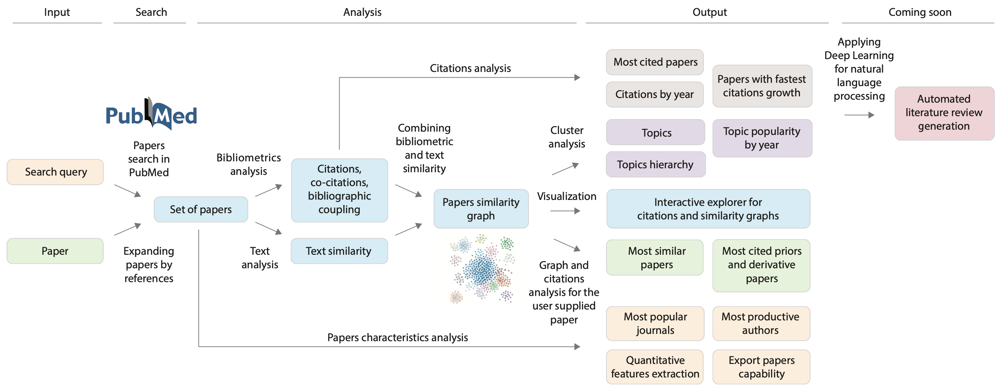

PubTrends
The number of papers published each year is growing steadily, so it becomes unfeasible for a single
person to be aware of all the publications in the field of interest. Review papers solve this problem to
some extent, but they cannot cover all the recent releases, focusing only on those with significant
impact. The necessity and demand for tools and methods to get a birds-eye view of the scientific area
covering all recent works is growing.
Pubtrends is a new scientific publications analysis service. It is an exploratory tool for researchers providing
faster trends analysis and breakthrough papers discovery among the steadily growing flow of papers worldwide.
The service aims to solve three tasks: give a brief overview of the field, explore popular trends in
publications, and help to find new promising directions. At the moment, the service includes papers from the
PubMed database and the Semantic Scholar archive. Semantic Scholar* aggregates significant journals and
publishers, including Springer Nature, ACM, etc. Together, the two contain 200 mln papers and 800 mln
references. PubMed database is synced regularly.
*Semantic Scholar is disabled now.
Workflow

All the analysis starts with user-supplied search query or the paper of interest.
In case of search query, first of all most cited papers containing the search query are found. This set of
papers is further extended by reference to papers which are similar, but may not contain some of the search
words.
In case of paper analysis, the service looks for connected papers and proceeds one step further by references to
find out which of the connected papers have co-citations, common references, etc.
Next step is known as bibliometrics analysis, i.e. citations graph analysis, collecting co-citations (when a
pair of papers are cited together), bibliographic coupling (number of common references in a pair of papers),
and possible citations based on texts similarity. These values are combined into aggregated similarity score
and are used to build similarity graph. Both citations and similarity graphs are available for
additional exploration in interactive graph viewer.
Dense groups or communities within similarity graph can serve as different topics within the set of papers.
Moreover, papers are analysed to find top cited papers, extract quantitative features from titles and abstract,
and much more.
Finally, user gets full report covering all the aspects of analysis.
Example
Here we describe the analysis for the search query human aging. First of all, user types human aging into
the search field. User can use double quotes wrapping to search for exact phrase or find documents
in the Pubmed database, which contain all the words in the query. The number of papers can be quite
significant, so it's natural to use some ranking and filtering to focus on either most cited, most
recent, or most relevant articles. A threshold can be configured from the main page.
The Pubtrends looks for documents in the local copy of the Pubmed database ranking all the documents by
citations number and picking top ones for further analysis. Most recent papers option is self-describing, while
most recent option returns articles with most frequent inclusions of the search query.
Processing can take some time, so please be patient. Once processing is finished browser will be redirected to a
result page.
Report

The report page contains all the analytics and consists of several parts: Overview, Highlights, Topics,
Trends, Publications, Authors, and Journals, etc. Side bar on the left of the page can be used for
navigation.
Please use About button - Pubtrends will guide you through the report.
Overview
The overview section demonstrates a birds-eye view of the field, including the total number of articles,
citations, and extracted topics. Word cloud shows the most frequent words in titles and abstracts. Also, it
contains a summary plot of papers per year. Please note that the word cloud component is clickable, and
you can navigate to documents containing the selected word. Articles can be viewed as a plain list, as
well. For example search query 500+ (20%) most cited papers were analyzed with more than 397 thousand citations,
and 20 separate topics were detected. Topics were computed by hierarchical clustering of papers
similarity graph, where similarity is computed based on citations information and paper titles and
abstracts.
The wordcloud on the left shows the most frequent words among papers. It is clickable, click on any word and
Pubtrends will show all the papers, containing it. Click Show as list button to present papers in good-old table
style. In table view user can search, sort etc.
The highlights section contains an interactive visualisation of top-cited papers, organised by number and
citations count. Different types of articles are shown in different colours.
Most cited papers and papers with quickest growth of citations are also shown here. All the papers are
clickable, and we can explore details on a separate page.
Network
Topics are closely related groups of documents. Similarity between papers is computed based on Bibliometrics
methods: bibliographic coupling, direct citations, co-citations, and text similarity
between papers. Community detection algorithm is used to extract dense communities or topics. Small topics
are merged if they contain less than five percent of all documents.
Overall structure within a research field can be visualised as a graph. We use hierarchical
clusters structure from Louvain Community detection algorithm and show similarities within each community
applying Local Sparsification method to reduce number of edges, also we show most similar papers from
different communities (topics).

This graph allows you to find out the most important spots. Hover on any nodes to view paper details, filter
papers with dedicated filter field, configure visualization options and more. On the screenshot you can see
papers coloured by different topics and the paper is highlighted with its similar neighbours.
Topics
Topics section contains information on topic sizes, topics similarity, etc.
One of the important questions is the quality of separation into topic, we show heatmap with information about
mean similarity between all the papers by topics.
Ideal case is when you see only diagonal highlighted, i.e.
similarity between papers within a single topic is much higher that with other topics. Topics are organized
hierarchically, corresponding dendrogram is also shown.
Section Trends shows the evolution of trends for the timeline.
Papers
In section Papers for each topic, the application shows familiar to users word cloud and articles plot. Word
cloud is built from terms specific to the given topic with respect to others. These words are computed using
TF-IDF normalization, a standard approach in the field of natural language processing. The more important word
is the more significant fraction of papers contains it.

Other
Other sections include information about the most popular journals, most productive authors.
Dedicate section Numbers shows quantitative features extracted from papers titles and abstracts.
Evolution section shows longitudinal analysis of topics evolution. Topics extraction is performed
at several time points to detect merges and splits of topics. Results are visualized on a dedicated plot,
where edges width reflects the number of papers which moved from one topic to another.
Paper analysis
In case when user is interested in the particular paper, PubTrends can help user to find similar papers and most important prior and derivative works. User can use title name of DOI for paper identification. The service will search for paper, analyze connected papers and proceed one step further by references to find out which of the connected papers have co-citations, common references, etc. When the set of papers is collected, both citations and similarity graphs are built. User can explore these graphs in integrated viewer.
Your feedback is welcome
Let's make the service better together! We would love to hear your opinion on the results.
Feel free to fill the feedback form on the bottom of reports page or use emotions buttons to
share your thoughts.